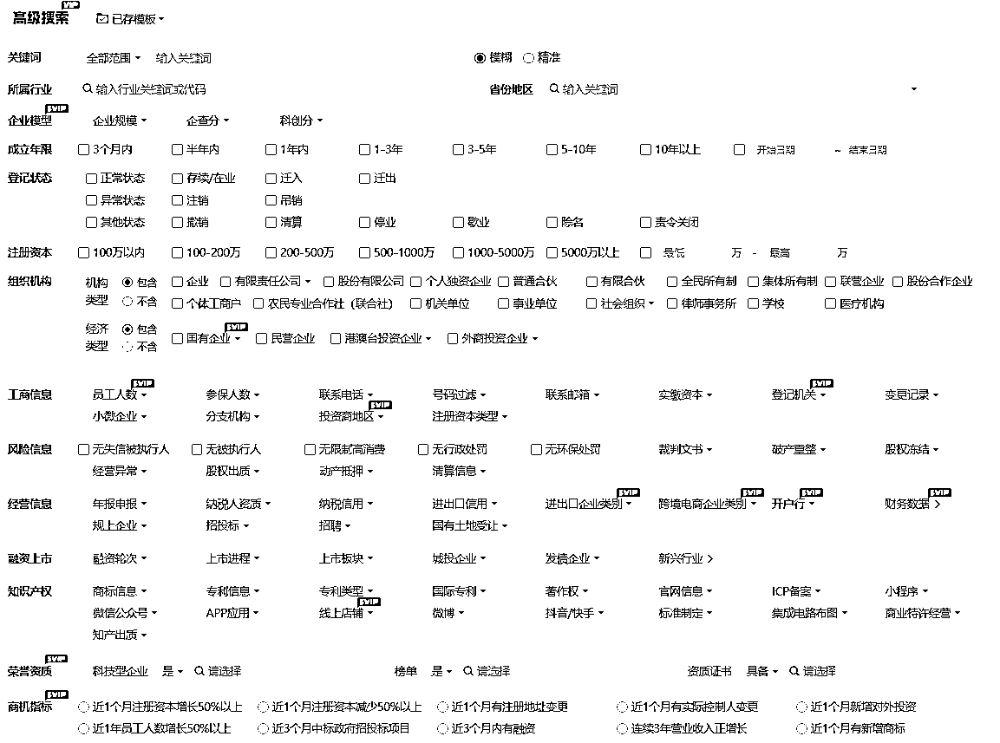
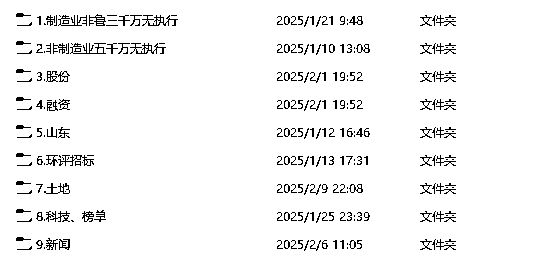
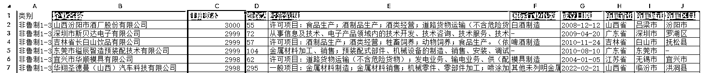
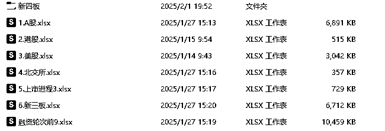
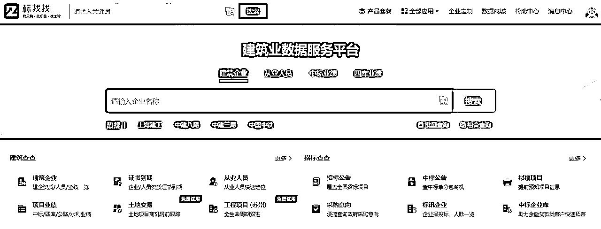
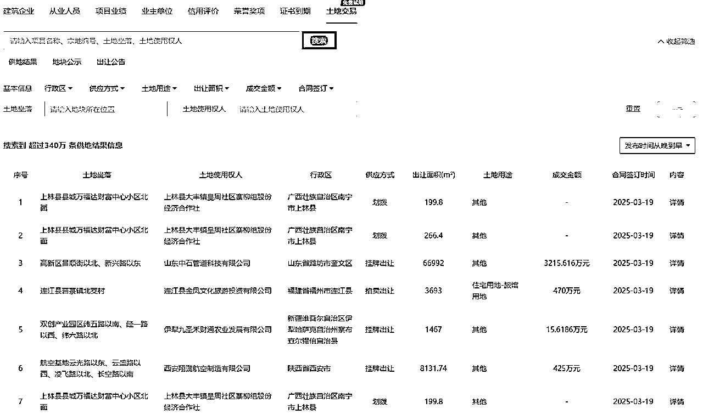
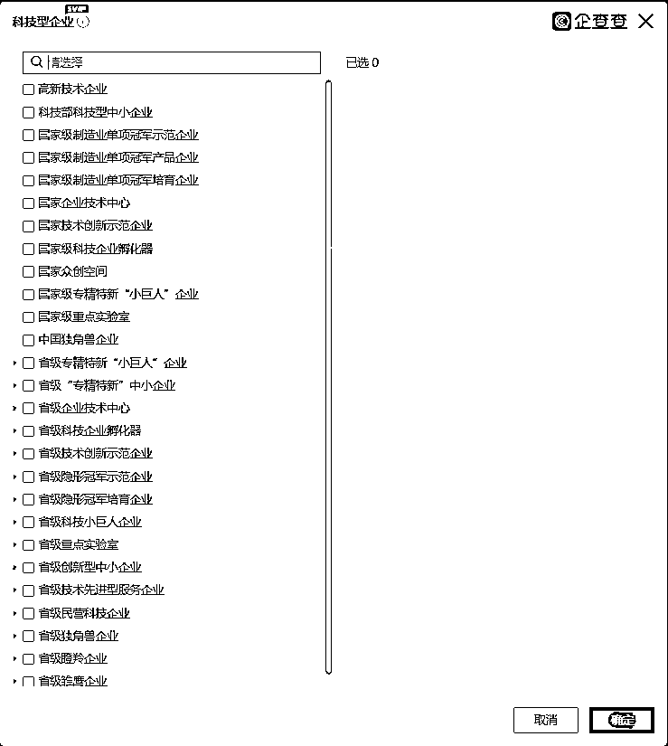
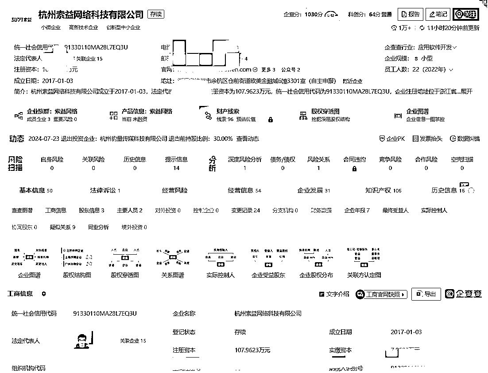
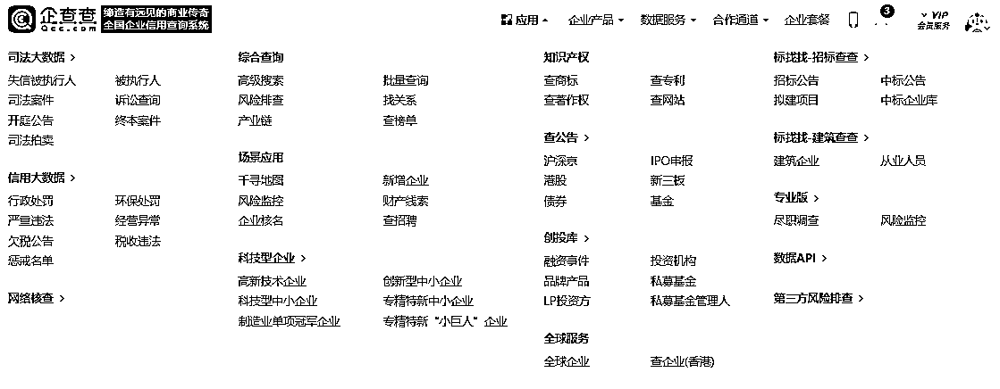
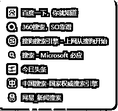

来源：https://fh8cx62ft4.feishu.cn/docx/LROtdsqKAo7VsFxT4KecGVovnec
大家好，我是风筝之都潍坊的半扇咸鱼，5年地方政府招商引资经验，3年财友。
19年-23年一直在潍坊滨海开发区从事一线招商引资工作，秉承越分享越幸运的心态，把我这5年来的招商经验分享给大家，也算是给自己上份工作做一次总结，内容很实用、很干货、很一线，看完了基本可以直接去应聘各地市场化的招商岗位。根据目录可以直接跳到想看的部分。
简单说下走上招商之前的经历，18年6月二本院校市场营销专业毕业之后，校招进了苏宁易购（虽然已经破产），在卖场做管培生，干了半年，做到部门督导之后，厌倦了每天扫街扫楼，背产品参数、接待各种客人的无聊日子之后，毅然决然辞职（瞒着爸妈），带着几千块租了个小房间，准备从校园电话卡推广攒第一桶金（就是给移动联通电信拉新生开卡，分利润），然后搬进学校的创业大楼自己搞项目，自己也试试创业什么滋味（其实从这也能看出来，为了创业而创业，失败概率大），结果事前从新生QQ群，贴吧等地方结识的新生，在开始校园电话卡开卡大战后，有一半都被其学长以各种各样的方法截胡了，我当时第一次实际感受到商战有多惨烈，结果就是预定大几千的收入最后只有不到1K。经此一役，直到下份工作之前我也没再找到合适的项目，可能跟我想扎根的校园学生消费能力太低有关吧，当时对做项目简直就是小白，没钱交下个月房租的时候，压力太大还得了鼻炎（水泥鼻真难受）。过年回家跟父母坦白后，第二年也就是19年回市里找了份跨境电商产品经理的工作，当时的公司号称潍坊乃至山东的跨境电商鼻祖，其实工作就是在Ebay上选品，从国内采购，发到海外仓，这么几个内容，当时公司运作模式是一个员工只能做一个产品线，我们同组三个新人分别被分到了笔记本风扇、键盘和螺丝三个产品线，其他两个人因为年纪大了，熬过了老板漫长的考察期，我一愣头青，左搞右搞利润一直上不去，拿底薪，工资=房贷，熬不住就跟女友回开发区了，后来才知道跨境老板之前被自己人背刺过，养出了一个规模比自己还大的跨境巨头，从那之后就对新员工内设了一段考察期，据后来得知那两位新人最后都做了公司合伙人，业务逐渐从Ebay转移到了亚马逊，再后来就没什么联系了。
回区里之后，女友去了小学教英语，我就一直在关注当地的工作机会，奈何区里优势产业是化工为主的制造业，有段时间都没找到合适的工作（长白），大概19年9月左右开发区里专门负责招商引资的集团公司对外社招，正好需要市场营销专业的毕业生，得，就是这了，费了点劲儿终于进去了。
我至今还记得第一天去上班的时候坐的位置是进门右转经过打卡机的第一张桌子，桌子上只有电话、联想台式机（真的卡，卡的我怀疑人生），我被分到了要求最为严苛的部长手里，（现在想来，也正是这位严苛的部长锻炼了我的抗压能力），第一个星期都是熟悉当地产业，部长会考察知识，这也基本是所有招商人员都要做的事情，知己知彼，先得知己，开发区面积、功能区、人口分布、优势产业，龙头企业，上规模的企业产品，水电燃气蒸汽土地三废处理价格，土地承载力，厂房建设价格，当地气候，人力资源优势等等等等。
第二周开始招商，因为我是一线招商人员，根据工作安排，我只需要搜集到项目线索，整理好相关材料之后，交由部长来跟进项目，负责与企业家的对接，邀约，拜访，谈判等等，所以我当时的工作性质基本与其他电销无异，每天就是上网，查企业，打电话，我是19年10月入职的，其实直到20年底，整整一年，我整个人都比较懵，根本无法适应招商工作，业绩也一般般，到底该联系什么产业的什么公司的什么人才能找到适合开发区的项目呢，虽然有各种培训，但是用处不大（关于招商引资培训，后边详聊），还经常被批评，到了20年底过年的时候，我在家开始琢磨这个工作到底该怎么做。我想看到这，大家应该有点无聊了，直接开第三部分，招商怎么做，把我的干货放出来。
简单说下招商业绩吧，微信企业高管联系人1400，线索百余条，来访客商20批次，包含国内500强、上市、地方领军、行业领军企业，项目规模从2亿元-100亿元，进入签约流程3个，分别是1亿元，2亿元，5亿元，签约落地项目1个，说来惭愧，干tm政府招商的聊天吹牛都特唬人，动不动十亿几十亿的项目打手上过着，什么智库人才、企业高管、万人计划什么的高知联系着，实际上咱就是一打工的hh。
招商是什么，招商就三件事，找到合适的企业，联系到企业里负责合适的人，把ta邀请来考察。
首先说明下我这些想法都哪里来的，我特别爱打听别人的项目，不是为了染指抢项目，而是希望能从别人的线索中总结出找到这些项目的渠道、方法。
两个参考维度，有实力、有意向。
怎么叫有实力，我们都知道，企业就是人财物的配合，有人、有财、有物（固定资产、技术等等都算）都行，
世界500强、中国500强、央企、国企（除非有特别好的资源，否则国企跨省投资的可能性很小，因为国企要求的就是保证国有资产的升值保值）、上市公司（首选上交所、深交所主板上市，港股、美股上市、），省百强（不一定非得百强，强的省千强也可以），市百强（与省百强同理），行业龙头、地方百强等这都是有实力的，当然这些企业也是最难联系的，我们当时专门成立了攻坚队，轮换完四个部门都无法有效联系的企业交由攻坚队来啃，这些骨头真的很硬。
这些企业的名单好找，基本从网上都能找到，需要额外关注的是新上榜的企业，（一个企业突然进了榜单，发展一定很快）。
后来随着那些个大而不强的企业比如某大、某东方等等，某威等等，例子太多了，某个时期会发现有些超大型企业会大规模的投资，这个时候作为招商人也要警惕是否是暴雷前兆。
还有其他企业名单怎么找呢，在这里我要重点推荐企查查这个APP，其实包括企查查、天眼查、水滴信用、启信宝、爱企查这些我都用过，最终陪伴我下来的还是企查查，尽管他贵，但是真的好用，就像咱们生财有术。

如图所示这是企查查高级搜索页面，维度很多很细，真的很合我的胃口。
我也是利用企查查这个功能自己整理出了一整套企业分类标准。


大家可以看到，前两个文件夹是按照行业选项中的制造业和非制造业两大类，其中又细分了注册资本和风险信息中的一些选项；第三个文件夹是专门把股份制企业列出来，因为我发现，公司进入上市程序都会股份制改造，企业的投资会变得异常活跃，我的好多线索都是从股份制企业中找到的；例如川洋新材、新远新材等等
第四个文件夹是融资，看下图

我把上市企业、新三板、新四板、北交所、有融资行为的企业都放到了这个文件夹里。我的很多大项目都是从这里出来的，而且别小看了新三板新四板的企业，其中有很多宝藏。22年落户到我们这的福融新材料从新四板中就可以顺藤摸瓜找到。其他项目例如南通醋化、诚达药业、康佳产业园、中信金属、港股的长沙远大住工、美股的万物新生项目、北交所的贝特瑞新材料等等也都是从上市企业里找到的。
招商最难的两件事，一是怎么找到这个企业，二是怎么能联系到关键人，第一步就是找到这个企业，就像100中的1一样，找不到这个企业，其余都没有意义。
第五个文件夹是山东，也就是本省，为什么单列出来呢，因为不会水土不服，说破天也跑不出去一个省，大家都是老乡，先说市外省内（因为当时我们考核的就是市外来的资金），优先推荐比自己实力强的市，比如我是潍坊市，我优先选的是济南、青岛、烟台，而且这几个市都出过线索，同样的，筛选条件要适当比省外企业筛选条件降低一些，我那个成功落户的5亿元新材料项目就是从青岛抢过来的。如图是我项目的签约仪式，领导我都打码了，右边一脸严肃的就是我了。
召唤师，你的光辉时刻是什么时候，是WCG吗？而我的光辉时刻，就是开大招的时候（网游英雄联盟蛮族之王台词）
而我们全国30万招商人的光辉时刻，就是签约的时候！
回想起来就像一场梦，22年7月，捡了自己的狗（土豆），工作签了项目，备孕一年老婆也突然怀孕了，那一阵真是难得的春风得意的时候。
这个项目在当年是潍坊市重点项目，23年上半年就建成投产了，做招商的还是有点家乡情怀的，招了个项目，解决当地一部分人就业，也让找了很久落户地的青岛老板找到了满意的地方。
先说下省内市外项目的逻辑，搬迁、扩产、地域合作、(青岛经开区国企产业园项目源于青潍一体化发展政策），当时我们集中突击过淄博，因为淄博的化工企业实力强，而且淄博的化工土地是真的没有了，出过不下十个项目，虽然最后没有落地的。济南有个医药公司500亩的医药化工项目，在省内找地方落户，也来我们区考察过。我的项目就是青岛前几的一个企业要发展，当地政府把我的项目老生产基地给征迁了，才有我的项目来潍坊落地。
再说下市内项目的逻辑，就是找个地方扩产，这种项目大多以租赁厂房为主，而且市内的项目特别吃人脉，关于怎么联系企业后文再说。
第六、七个文件夹分别是土地、环评招标，什么逻辑呢，有过这些记录的企业，都是实打实买过土地投过项目的企业，其中环评招标需要一个一个的从市环境监察官网上找出来，说实话比较麻烦，实用性不如土地交易记录，这里呢又得表扬企查查了。

这是企查查另一个平台，左下方的土地交易板块，正是我需要的资料。

在这个页面上你可以选择所属省市、供应方式等好几个维度，我的习惯是扒下近五年来所有成交金额大于1000万的数据，筛选之后再扒1000万以下的，因为大企业也有可能在某个小项目上买几十亩地做做小试中试，所以为了不放过任何一个实力企业，我推荐能扒的全扒下来，这又到了圈友们发挥的时候了，做个爬虫，做个智能体，把所有数据扒下来，让智能体让AI帮你分析，哪个企业是值得你联系的，效率翻好多倍。
招商做到最后，就是做个积累，按我们书记的话说，你一天联系到10个实力企业的关键人，一年就是3000多个，第二年你维护好这3000个企业家，你不出项目我都不信。
第八个文件夹是科技、榜单，除了之前说的世界500强、中国500强、省市百强等，关乎企业实力的标签还有很多，企查查又牛了

从高级搜索页面选中科技企业之后，出来的这些标签，都是一个企业有实力的体现，当然含金量不一样，高新技术企业这个标签，已经很难入我法眼了。聪明如圈友肯定也知道这个的含金量，可以帮你找到很多有实力的企业。
写到这，顺手查了下咱们生财有术。

左下角就是咱们亦仁老大的美照了。
这个板块最后带大家看看企查查其他有趣的功能（好产品黏性真的高）

企查查主页上方“应用字眼”悬停会出现这个页面。其中有助于招商的这几个功能。
1.司法大数据信用大数据，诸如失信被执行人（企业维度）、严重违法、欠税公告（如果出现这个标签，那这个企业的实力大打折扣，毕竟除了土地的钱，地方政府最看重的就是税收了，你丫都欠税了，来我这大概率也不咋样。）
顺便提一嘴，我们这种三四线城市，土地财政为主，招商就是嫌贫爱富，虽然听着不好听，但也是大多数城市的招商逻辑，咱们客观看待。
2.综合查询中的产业链有很多有用的知识，可以下个锚。
3.场景应用中的千寻地图，很有用，当时我们集中对浙江化工企业攻坚，从高级搜索不好搜的时候，用这个功能画个圈，圈内的企业无所遁形，能找到很多宝藏企业。新增企业，我的理解是这个代表着一部分趋势，如果某个产业的公司突然扎根注册，比如低空经济，在招商方面就要注意了。如果一个企业在多地投资企业，那这个公司你也得注意了。
4.科技型企业-代表实力。
5查公告。是了解上市企业的很好的手段，另外一个网站-巨潮资讯，查公告也好用。
6.创投库。简单来说，企业有钱了，有钱了才能投资。
7.标找找-土地、项目招标相关，与企业实力有关。
为了显示出与上述正统找企业的方法，我搞了个分割线，下面说的这个方法是属于短平快的。
通过新闻找线索，这在当时风靡我们集团，也确实出了很多项目。
大家都知道，有些企业去地方政府考察、企业去地方政府考察会出文章，文章中会有类似投资环境考察、会见一行、项目投资等一些关键词，总结出这些关键词，去所有能找到包含关键词的文章

包括不同的搜索引擎、微信搜一搜、微信公众号、地方政府官网找到这些新闻，提炼出企业，那好这就是最近最有可能投资的企业，当然，企业实力层次不齐，而且如果整个公司都在搜新闻，那谁会踏踏实实联系榜单呢，这也是为什么领导一直打压这种毒瘤方法。
聪明如你，如果不可以这样，那是不是可以专门找实力企业的相关新闻呢？那必须的可以，只不过效率太低，我们都是靠人工的，那这又到了咱们圈友发挥的时候了，做个智能体，把实力企业的新闻线索都爬下来，交给AI思考，效率翻不知道多少倍。这也是我最近在做的事情，从招商圈子跳出来，有机会通过生财接触到现在最前沿的提效工具，再回去招商，降维打击。
在找企业的过程中，参考当地的优势资源，找稍微跳一跳能够到的产业，比如我们这里支柱产业是化工医药新材料，我反正是从来不会联系微电子产业、新能源汽车产业，项目很好，但是我们不配。自从国务院下达全国统一大市场政策，禁止各地以招商引资政策的方式给予不同市场主体不同的政策后，深挖当地优势，让企业有兴趣来，来了能赚钱，大家互惠互利才是正道。
联系企业关键人的关键理论-六度人脉法则
六度人脉理论表示地球上所有人都可以通过六层以内的熟人链联系起来。换句话说,你和任何一个陌生人之间所间隔的人不会超过六个。
企业家也如此。分享几个我经常用的具体方法。
1.公司电话-最踏实的路子，尤其在国企央企上格外好用，圈友们，你们知道联系一家央企的难度有多大么，让你这几天找个小项目先赚他三五千难度差不多。其他的方式对付央国企犹如蚍蜉撼树，最好用的方式就是把能找到的这个央企子公司的电话全找到，通过各个部门的真诚对话，了解企业现在的发展规划，一定是各个部门，因为央企人事变动大，你要找的了解投资、参与投资、负责投资的人很难一通电话找到，甚至要连续打一周一个月的电话才能碰到，所以你需要把这个公司所有部门都渗透，还要利用好传真这个工具，把带着你红章的传真狠狠得发给她，然后再确认传达进度，联系央国企讲究得就是穷追不舍。
2.那么找到公司电话了，对面接起电话来你该说找谁呢？投资部、战略部、战略投资部、投资发展部，一个架构庞杂的企业，可能会同时出现这些个部门，你知道究竟是谁负责买地么？只能全都联系到，你才能确认这个企业没有项目。那么人名呢，有些企业要求实名制转接，从企查查企业主要人员中找，从企业官网找，从新闻线索中找，从脉脉找，从领英找。
3.找协会、找圈子，这招特别适合交际能力强的人，我交际能力一般，而且圈子品质参差不齐，我甚至刚加了个什么什么协会的副会长，那鸟人跟我直接要当地特产，说会给我介绍项目，后来就再也没信了。
4.科技爆破，关于这块实际上就是利用一些软件直接查询高管电话，因为涉及隐私问题，我就不在这明说了，不过还挺好用，能找到很多企业家的手机号。